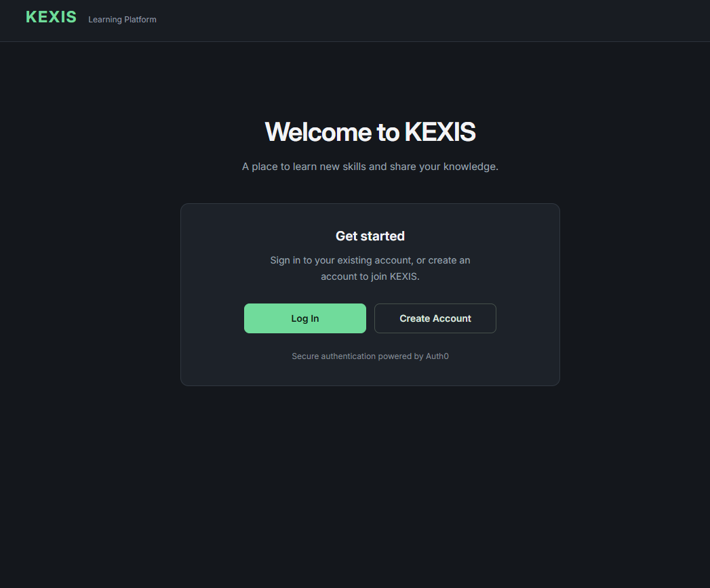

Independent project Identity and access management
Identity Integration with Auth0
I connected a React learning-platform portal to Auth0 so sign-in, account creation and user identity could be handled by a dedicated identity provider.
- Application
- KEXIS Learning Platform
- Frontend
- React · Vite
- Identity
- Auth0 React SDK
- Protocol
- OpenID Connect · PKCE

The starting point
Authentication in a web application involves more than collecting a username and password. The application also needs to start a sign-in flow, receive the user after authentication, maintain its authentication state and decide how to present identity information.
I built this project to explore those responsibilities in a React application using Auth0 as the identity provider. The portal has a signed-out welcome screen and a signed-in account overview, giving the integration a clear user journey to support.
Designing the experience
I kept the portal’s own authentication interface deliberately small. A visitor can choose to log in or create an account; the application redirects to Auth0 rather than collecting passwords itself.
The login action starts a standard redirect. The account-creation action adds Auth0’s screen_hint=signup parameter to request the sign-up experience. After authentication, the user returns to the application root, where the Auth0 React SDK processes the callback and exposes the signed-in state.
When a user signs out, the application redirects back to the same root page. The screenshot shows the signed-out experience; the account dashboard is rendered conditionally after Auth0 reports an authenticated user.
Integrating the SDK
I built the frontend with React and Vite and wrapped the application in Auth0’s Auth0Provider. The provider reads the Auth0 domain and client ID from Vite environment variables, sets the redirect URI to the application root, and requests the OpenID Connect scopes openid profile email.
The installed Auth0 SPA SDK handles the Authorization Code flow with PKCE for the browser application. I rely on the SDK for the redirect transaction and callback handling rather than implementing token exchange or the PKCE verifier myself.
React consumes the SDK’s loading, authentication and error state to switch between the welcome screen and the account view. It also presents a retry action when the SDK reports an authentication error.
Using identity claims
Once authenticated, the application retrieves the ID token claims through getIdTokenClaims(). It reads standard profile information such as email from the Auth0 user object and looks for namespaced claims for account type, full name, occupation and learning or creator profile details.
The account type changes which fields appear in the profile summary. A learner view can show learning goals and level, while a creator view can show subject area and experience level. The interface also displays whether the email is verified.
The React code consumes these claims; it does not contain an onboarding form, a profile database, or the Auth0 Action that would issue custom claims. Those parts would need to be verified in the identity-provider configuration. The account type is used to personalise the view, not to enforce access permissions.
Security boundaries
I use the ID token claims as identity information for the client-side profile display. The project does not configure an API audience or call a protected backend, and it does not treat the ID token as an API credential.
The authenticated state controls which interface the browser renders. It is not a server-side authorization control: learner and creator labels do not prove that protected data or operations would be secured in a real backend. A production system would need explicit authorization checks at the API or data layer.
MFA, social or database connections, password policies, Auth0 Forms and the custom-claim Action are not defined in the application repository, so I have not presented them as verified features of this implementation.
The outcome and what I learned
The project brings together Auth0-managed sign-in and account creation, redirect handling through the React SDK, sign-out, and an account overview that can display different identity claims.
It helped me understand how an identity provider and a frontend divide responsibilities. Auth0 establishes the authenticated identity; the application decides how to present that identity. If the application later protects data or APIs, it must add authorization checks beyond changing the client-side view.
A next step would be to verify the tenant-side onboarding and claim configuration, test the complete authenticated journey, and add a backend API with explicit authorization rules. I have not described those as completed work.